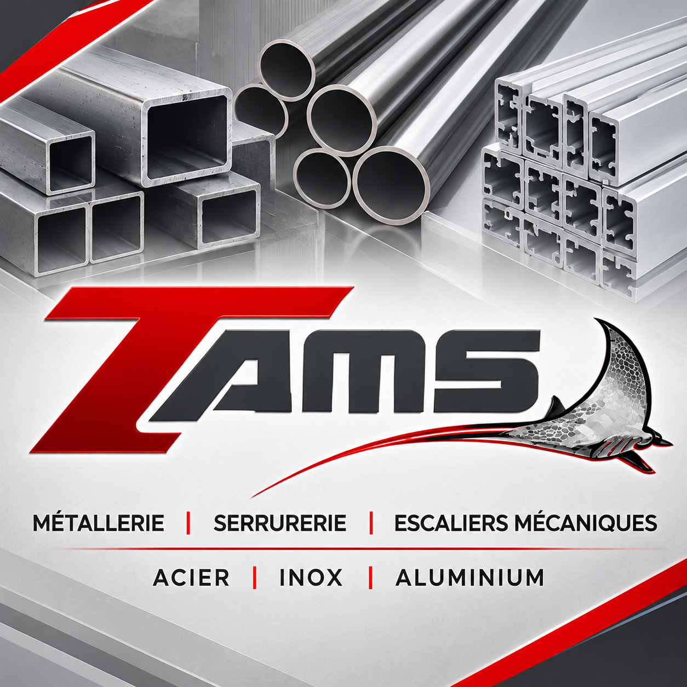

Métallerie
Escaliers métalliques, garde-corps, rampes et ouvrages sur mesure.

Des réalisations élégantes et durables en acier, inox et aluminium, pensées pour les professionnels et les particuliers.
Découvrir nos réalisations →Basée en Essonne, T-AMS réalise des ouvrages métalliques sur mesure avec une attention particulière portée à la précision et aux finitions. Depuis 2016, nous intervenons également dans les habillages inox d'escaliers mécaniques et de trottoirs roulants.
Escaliers métalliques, garde-corps, rampes et ouvrages sur mesure.
Portes métalliques, portes coupe-feu, portails et clôtures.
Carports, pergolas, marquises et structures personnalisées.
Habillages sur mesure pour escaliers mécaniques et trottoirs roulants depuis 2016.
Acier, inox et aluminium, avec le souci du détail.
Une sélection d'ouvrages mettant en valeur notre maîtrise technique et notre sens des finitions.

Structures sur mesure

Architecture et précision
Entreprise basée en Essonne (91). Pour toute demande d'information ou de devis, contactez-nous via LinkedIn.
Contacter T-AMS →